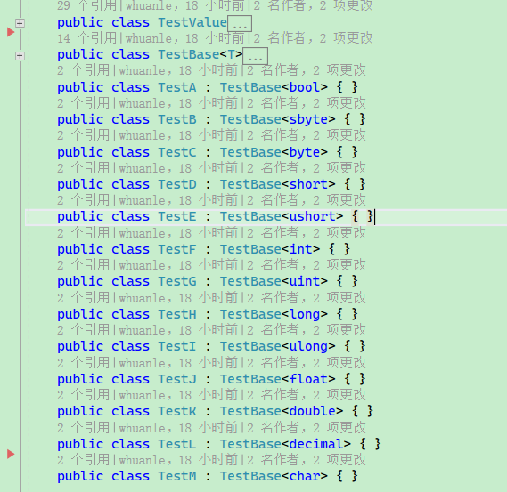

Maomi.Mapper
注：本项目用于教学目的，性能较差，请勿用于生产环境。
仓库地址：https://github.com/whuanle/Maomi.Mapper
MaomiMapper 是一个使用表达式树构造生成对象成员映射的框架，即对象映射框架。
虽然 MaomiMapper 性能不啥样，但是代码注释也写得很齐全，适合读者研究反射、表达式树、类型转换等代码。
MaomiMapper 与 AutoMapper 对比：
| Method | Mean | Error | StdDev | Gen0 | Allocated |
|---|---|---|---|---|---|
| ASAutoMapper | 146.30 ns | 1.759 ns | 1.645 ns | 0.0362 | 304 B |
| ASMaomiMapper | 817.46 ns | 6.467 ns | 6.049 ns | 0.0935 | 784 B |
| ASDelegate | 668.56 ns | 5.050 ns | 4.724 ns | 0.0839 | 704 B |
| _AutoMapper | 67.56 ns | 0.438 ns | 0.410 ns | 0.0191 | 160 B |
| _MaomiMapper | 242.03 ns | 0.751 ns | 0.702 ns | 0.0315 | 264 B |
| _Delegate | 188.64 ns | 1.251 ns | 1.109 ns | 0.0267 | 224 B |
AS 开头的方法表示有类型转换。
测试使用的模型类：
public class TestValue
{
public bool ValueA { get; set; } = true;
public sbyte ValueB { get; set; } = 1;
public byte ValueC { get; set; } = 2;
public short ValueD { get; set; } = 3;
public ushort ValueE { get; set; } = 4;
public int ValueF { get; set; } = 5;
public uint ValueG { get; set; } = 6;
public long ValueH { get; set; } = 7;
public ulong ValueI { get; set; } = 8;
public float ValueJ { get; set; } = 9;
public double ValueK { get; set; } = 10;
public decimal ValueL { get; set; } = 11;
public char ValueM { get; set; } = (Char)12;
}
public class TestB
{
public bool ValueA { get; set; } = true;
public sbyte ValueB { get; set; } = 1;
public byte ValueC { get; set; } = 2;
public short ValueD { get; set; } = 3;
public ushort ValueE { get; set; } = 4;
public int ValueF { get; set; } = 5;
public uint ValueG { get; set; } = 6;
public long ValueH { get; set; } = 7;
public ulong ValueI { get; set; } = 8;
public float ValueJ { get; set; } = 9;
public double ValueK { get; set; } = 10;
public decimal ValueL { get; set; } = 11;
public char ValueM { get; set; } = (Char)12;
}
public class TestBase<T>
{
public T ValueA { get; set; }
public T ValueB { get; set; }
public T ValueC { get; set; }
public T ValueD { get; set; }
public T ValueE { get; set; }
public T ValueF { get; set; }
public T ValueG { get; set; }
public T ValueH { get; set; }
public T ValueI { get; set; }
public T ValueJ { get; set; }
public T ValueK { get; set; }
public T ValueL { get; set; }
}
public class TestC : TestBase<int> { }
public class TestD
{
public bool ValueA { get; set; } = true;
public sbyte ValueB { get; set; } = 1;
public byte ValueC { get; set; } = 2;
public short ValueD { get; set; } = 3;
public ushort ValueE { get; set; } = 4;
public int ValueF { get; set; } = 5;
public uint ValueG { get; set; } = 6;
public long ValueH { get; set; } = 7;
public ulong ValueI { get; set; } = 8;
public float ValueJ { get; set; } = 9;
public double ValueK { get; set; } = 10;
public decimal ValueL { get; set; } = 11;
public char ValueM { get; set; } = (Char)12;
}
快速使用 MaomiMapper
MaomiMapper 框架的使用比较简单，示例如下：
var maomi = new MaomiMapper();
maomi
.Bind<TestValue, TestB>()
.Bind<TestValue, TestC>()
.Bind<TestValue, TestD>();
maomi.Map<TestValue, TestD>(new TestValue());
配置
在映射对象时，可以配置映射逻辑，比如碰到成员是对象时，是否开辟新对象，是否映射私有成员等。
使用方法如下：
var mapper = new MaomiMapper();
mapper.Bind<TestA, TestB>(option =>
{
option.IsObjectReference = false;
}).Build();
每个类型映射都可以单独配置一个 MapOption。
MapOption 类型：
/// <summary>
/// 映射配置
/// </summary>
public class MapOption
{
/// <summary>
/// 包括私有字段
/// </summary>
public bool IncludePrivate { get; set; } = false;
/// <summary>
/// 自动映射，如果有字段/属性没有配置映射规则，则自动映射
/// </summary>
public bool AutoMap { get; set; } = true;
/// <summary>
/// 如果属性字段是对象且为相同类型，则保持引用。 <br />
/// 如果设置为 false，则会创建新的对象，再对字段逐个处理。
/// </summary>
public bool IsObjectReference { get; set; } = true;
/// <summary>
/// 配置时间转换器。<br />
/// 如果 b.Value 是 DateTime，而 a.Value 不是 DateTime，则需要配置转换器，否则会报错。
/// </summary>
/// <value></value>
public Func<object, DateTime>? ConvertDateTime { get; set; }
}
自动扫描
MaomiMapper 支持扫描程序集中的对象映射，有两种方法可以配置。
第一种方法是使用特性类，标识该类型可以转换为何种类型。
如下代码所示，TestValueB 标识了其可以映射为 TestValueA 类型。
public class TestValueA
{
public string ValueA { get; set; } = "A";
public string ValueB { get; set; } = "B";
public string ValueC { get; set; } = "C";
}
[Map(typeof(TestValueA), IsReverse = true)]
public class TestValueB
{
public string ValueA { get; set; }
public string ValueB { get; set; }
public string ValueC { get; set; }
}
第二种方法是实现 IMapper，在文件中配置映射规则。
public class MyMapper : IMapper
{
public override void Bind(MaomiMapper mapper)
{
mapper.Bind<TestA, TestC>(option => option.IsObjectReference = false);
mapper.Bind<TestA, TestD>(option => option.IsObjectReference = false);
}
}
此外，可以继承实现 MapOptionAttribute 特性，然后附加到类型中，在扫描程序集映射时，框架会自动配置。
[AttributeUsage(AttributeTargets.Class, AllowMultiple = false, Inherited = false)]
public class MyMapOptionAttribute : MapOptionAttribute
{
public override Action<MapOption> MapOption => _option;
private Action<MapOption> _option;
public MyMapOptionAttribute()
{
_option = option =>
{
option.IsObjectReference = false;
};
}
}
[MyMapOption]
[Map(typeof(TestB), IsReverse = true)]
public class TestA
{
public string ValueA { get; set; } = "A";
public string ValueB { get; set; } = "B";
public string ValueC { get; set; } = "C";
public TestValueA Value { get; set; }
}
配置字段映射
可以使用 .Map 配置一个字段的映射规则。
maomi
.Bind<TestValue, TestB>()
.Map(a => a.ValueC + 1, b => b.ValueC).Build()
相当于：
b.ValueC = a.ValueC + 1
如果有私有字段需要映射，可以使用名称字段。
public class TestD
{
public string ValueA { get; set; }
public string ValueB;
private string ValueC { get; set; }
private string ValueD;
}
public class TestDD
{
public string ValueA { get; set; }
public string ValueB;
public string ValueC { get; set; }
public string ValueD;
}
var mapper = new MaomiMapper();
var build = mapper.Bind<TestC, TestD>(
option =>
{
option.IncludePrivate = true;
})
.Map(a => "111", b => "ValueC")
.Build();
mapper.Bind<TestC, TestDD>().Build();
相当于：
b.ValueC = "111"
在配置映射时，可以调用 Build() 方法，自动映射其它字段或属性。比如开发者只配置了 .ValueA 属性，未配置 ValueB、ValueC 等，则调用 Build() 时，框架会补全其它属性对应的映射。如果未配置，框架则在第一次使用对象映射时自动调用。
如果需要反向映射，可以使用 BuildAndReverse()。
.BuildAndReverse(option =>
{
option.IsObjectReference = false;
});
可以忽略字段映射。
// b.V = a.V + "a"
.Map(a => a.V + "a", b => b.V)
// 忽略 V1
.Ignore(x => x.V1)
// b.V2 = a.V
.Map(a => a.V, b => "V2")
// b.V3 = "666";
.Map(a => "666", b => "V3")
.Build();
对象映射
有以下模型类：
public class TestValue
{
public string ValueA { get; set; } = "A";
public string ValueB { get; set; } = "B";
public string ValueC { get; set; } = "C";
}
public class TestA
{
public TestValue Value { get; set; }
}
public class TestB
{
public TestValue Value { get; set; }
}
TestA 和 TestB 类型中，均有 TestValue 类型的属性，框架默认使用引用赋值，示例：
testB.Value = testA.Value
两个对象的 Value 属性引用了同一个对象。
如果需要开辟新的实例，可以使用：
var mapper = new MaomiMapper();
mapper.Bind<TestA, TestB>(option =>
{
// 开辟新的实例
option.IsObjectReference = false;
}).Build();
如果两者的 Value 属性是不同类型对象，则框架也会自动映射。如：
public class TestA
{
public TestValueA Value { get; set; }
}
public class TestB
{
public TestValueB Value { get; set; }
}
TestValueA、TestValueB 均为对象类型时，框架会自动映射下一层。
数组和集合映射
MaomiMapper 只能处理相同类型的数组，并且使用直接赋值的方法。
public class TestA
{
public int[] Value { get; set; }
}
public class TestB
{
public int[] Value { get; set; }
}
var mapper = new MaomiMapper();
mapper.Bind<TestA, TestB>(option =>
{
option.IsObjectReference = true;
}).BuildAndReverse(option =>
{
option.IsObjectReference = false;
});
var a = new TestA
{
Value = new[] { 1, 2, 3 }
};
var b = mapper.Map<TestA, TestB>(a);
MaomiMapper 可以处理大多数集合，除了字典等类型。
处理相同类型的集合：
public class TestC
{
public List<int> Value { get; set; }
}
public class TestD
{
public List<int> Value { get; set; }
}
var mapper = new MaomiMapper();
mapper.Bind<TestC, TestD>(option =>
{
option.IsObjectReference = false;
}).Build();
var a = new TestA
{
Value = new[] { 1, 2, 3 }
};
var b = mapper.Map<TestA, TestB>(a);
相当于：
d.Value = new List<int>();
d.Value.AddRange(c.Value);
也可以处理不同类型的集合：
public class TestE
{
public List<int> Value { get; set; }
}
public class TestF
{
public IEnumerable<int> Value { get; set; }
}
public class TestG
{
public HashSet<int> Value { get; set; }
}
var mapper = new MaomiMapper();
mapper.Bind<TestE, TestF>(option =>
{
option.IsObjectReference = false;
}).Build();
var a = new TestE
{
Value = new List<int> { 1, 2, 3 }
};
var b = mapper.Map<TestE, TestF>(a);
以上 TestE、TestF、TestG 均可互转。
值类型互转
框架支持以下类型自动互转。
Boolean
SByte
Byte
Int16
UInt16
Int32
UInt32
Int64
UInt64
Single
Double
Decimal
Char

支持任何类型自动转换为 string，但是不支持 string 转换为其它类型。
对于时间类型的处理，可以手动配置转换函数：
public class TestA
{
public string Value { get; set; }
}
public class TestB
{
public DateTime Value { get; set; }
}
[Fact]
public void AS_Datetime()
{
var mapper = new MaomiMapper();
mapper.Bind<TestA, TestB>(option =>
{
// 配置转换函数
option.ConvertDateTime = value =>
{
if (value is string str)
return DateTime.Parse(str);
throw new Exception("未能转换为时间");
};
}).Build();
var date = DateTime.Now;
var a = mapper.Map<TestA, TestB>(new TestA()
{
Value = date.ToString()
});
Assert.Equal(date.ToString("yyyy/MM/dd HH:mm:ss"), a.Value.ToString("yyyy/MM/dd HH:mm:ss"));
}